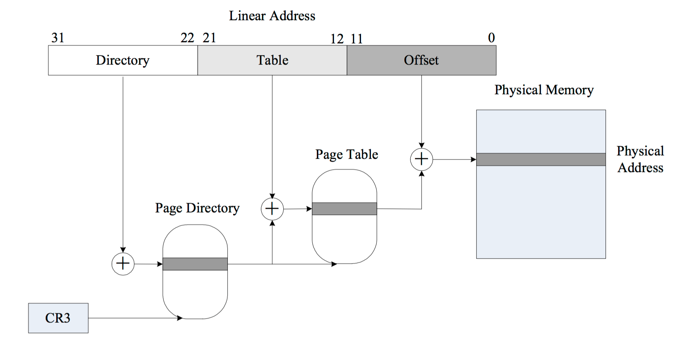
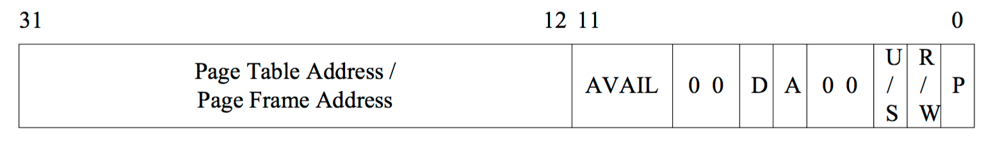
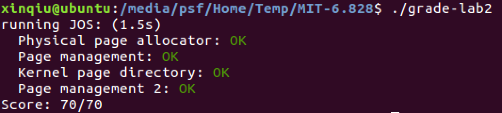

MIT 6.828 Lab 2

继续开始Lab2，这部分内容可以回忆以前的CSAPP的malloc lab.
序言
这个实验要实现内存管理。内存管理有两个部分，第一部分是给内核分配物理内存，内存分配是以4096 bytes为一个单位，也就是页。第二部分是虚拟内存的管理，关于物理内存和虚拟内存的映射。
Lab 2 添加了以下文件:
- inc/memlayout.h
- kern/pmap.c
- kern/pmap.h
- kern/kclock.h
- kern/kclock.c
memlayout.h 描述了虚拟地址空间的结构，通过修改pmap.c. memlayout.h 和 pmap.h
来实现PageInfo结构，这个是为了记录哪些物理内存的page是空闲的。kclock.c 和 kclock.h 管理PC的时钟和CMOS RAM硬件，这个设备记录了物理内存的数量。pmap.c需要读这个设备来确定内存大小。
Part 1: 物理页管理
物理页
操作系统需要记录物理RAM哪部分是空闲的哪部分在用。JOS使用page granularity来管理物理内存，因此可以用MMU来映射和保护每一块分配的内存。
以下内容要配上 inc/memlayout.h 的图。

Exercise 1
实现kern/pmap.c中的函数.
- boot_alloc()
- mem_init() (only up to the call to check_page_free_list(1))
- page_init()
- page_alloc()
- page_free()
首先看通过查看 mem_init 函数可以知道，boot_alloc 是用来初始化页目录(page directory)。在 boot_alloc 中，nextfree 为下一个空闲内存的虚拟内存地址，当 nextfree 为空时会先初始化。用到了ROUNDUP，这个ROUNDUP在 /inc/types.h 中，因为内存区块是对齐的，所以每块都是固定的大小。npages 是页数量，可使用的内存大小是 npages × PGSIZE ，根据lab1提到的，KERNBASE是分配内存的起始地址，若nextfree 大于 KERNBASE + npages × PGSIZE 的值，就是指针地址溢出了。
所以只需要添加上这部分代码。
result = nextfree;
nextfree = ROUNDUP(nextfree+n, PGSIZE);
if((uint32_t)nextfree > KERNBASE + (npages * PGSIZE)) {
panic("Out of memory!\n");
}
mem_init 在执行完上面的函数以后，会给kern_pgdir加上权限位。
之后就是要初始化所有的struct PageInfo 为 0。首先确定PageInfo的大小，然后用boot_alloc分配内存，接着用memset初始化。
size_t PageInfo_size = sizeof(struct PageInfo);
pages = (struct PageInfo *)boot_alloc(npages * PageInfo_size);
memset(pages, 0, npages * PageInfo_size);
接着调用page_init()来初始化page结构和内存空闲链表。
参考注释，一步步修改就可以了。
void
page_init(void)
{
// The example code here marks all physical pages as free.
// However this is not truly the case. What memory is free?
// 1) Mark physical page 0 as in use.
// This way we preserve the real-mode IDT and BIOS structures
// in case we ever need them. (Currently we don't, but...)
// 2) The rest of base memory, [PGSIZE, npages_basemem * PGSIZE)
// is free.
// 3) Then comes the IO hole [IOPHYSMEM, EXTPHYSMEM), which must
// never be allocated.
// 4) Then extended memory [EXTPHYSMEM, ...).
// Some of it is in use, some is free. Where is the kernel
// in physical memory? Which pages are already in use for
// page tables and other data structures?
//
// Change the code to reflect this.
// NB: DO NOT actually touch the physical memory corresponding to
// free pages!
size_t i;
page_free_list = NULL;
for (i = 0; i < npages; i++) {
if (i == 0) {
pages[i].pp_ref = 1;
pages[i].pp_link = NULL;
}
else if (i < npages_basemem){
pages[i].pp_ref = 0;
pages[i].pp_link = page_free_list;
page_free_list = &pages[i];
}
else if (i >= IOPHYSMEM/PGSIZE && i < EXTPHYSMEM/PGSIZE) {
pages[i].pp_ref = 1;
}
else if (i >= EXTPHYSMEM/PGSIZE || i < PADDR(boot_alloc(0))/PGSIZE){
pages[i].pp_ref++;
pages[i].pp_link = NULL;
}
else {
pages[i].pp_ref = 0;
pages[i].pp_link = page_free_list;
page_free_list = &pages[i];
}
}
}
之后需要实现page_alloc函数。这个函数是为了分配一个物理页， 返回对应的结构体。
struct PageInfo *
page_alloc(int alloc_flags)
{
struct PageInfo result;
if (!page_free_list)
return NULL;
result = page_free_list;
page_free_list = page_free_list->pp_link;
result->pp_link = NULL;
if (alloc_flags & ALLOC_ZERO) {
memset(page2kva(result), 0, PGSIZE);
}
return result;
}
最后是实现page_free。
void
page_free(struct PageInfo *pp)
{
// Fill this function in
// Hint: You may want to panic if pp->pp_ref is nonzero or
// pp->pp_link is not NULL.
assert(pp->pp_ref == 0);
assert(pp->pp_link == NULL);
pp->pp_link = page_free_list;
page_free_list = pp;
}
Part 2: 虚拟内存
虚拟内存
Exercise 2
熟悉关于分页地址转换(page translation)和基于页的保护(page-based protection)。
首先介绍一下80386将逻辑地址转为物理地址的方法。
- 分段地址转换，由段选择子和段偏移量构成的逻辑地址转为线性地址。
- 分页地址转换，线性地址转为物理地址。

关于页转换段保护之类的还是查看Intel 80386 Reference Manual.
虚拟地址，线性地址，物理地址
虚拟地址是有段选择子和段偏移构成。线性地址是经过分段地址转换单没进行分页地址转换。物理地址是两种转换之后最终通过硬件总线到RAM的地址。
Selector +--------------+ +-----------+
---------->| | | |
| Segmentation | | Paging |
Software | |-------->| |----------> RAM
Offset | Mechanism | | Mechanism |
---------->| | | |
+--------------+ +-----------+
Virtual Linear Physical
C 指针是虚拟地址的偏移部分。在 boot/boot.S中，引入全局描述符表(GDT)将所有段基址设为0到 0xffffffff。因此线性地址等于虚拟地址的偏移量。
Exercise 3
在QEMU中使用 xp 可以查看物理内存，PD虚拟机对于lab手册上调出QEMU monitor的方法没用，通过查资料发现使用这个也能查看 qemu-system-i386 -hda obj/kern/kernel.img -monitor stdio -gdb tcp::26000 -D qemu.log。
在QEMU monitor中使用 info pg 查看当前页表， info mem 查看虚拟内存的范围。
进入保护模式以后，所有地址引用都是虚拟地址，由MMU转换，也就是说 C 指针都是虚拟地址。
JOS内核经常需要操作地址通过整数而不解引用。JOS为了区分两种情况：类型 uintptr_t 代表虚拟地址，physaddr_t 代表物理地址。虽然都是32位整数，但是不能直接解引用，需要先转型。
JOS需要读取或修改内存，尽管只知道物理地址。给页表添加映射需要分配无力内存去储存一个页目录，然后才能初始化内存。然而内核不能绕过虚拟地址转换，因此不能直接加载和储存物理地址。为了将物理地址转为虚拟地址，内核需要在物理地址加上0xf0000000从而找到相关的虚拟地址，可以使用KADDR(pa)完成这个操作。
同样，如果内核需要通过虚拟地址去找物理地址，就需要减去0xf0000000，可以使用PADDR(va)完成这个操作。
引用计数
之后实验经常需要将多个虚拟地址同时映射到同一块物理页上，因此需要给每一个物理页计数引用次数，这个值位于物理页 struct PageInfo 中的 pp_ref 字段中。
页表管理
完成页表管理：插入删除线性到物理地址的映射和创建页表。
Exercise 4
实现kern/pmap.c里的pgdir_walk()，boot_map_region()，page_lookup()，page_remove()，page_insert()这几个函数。check_page()会测试是否写的正确。
首先是 pgdir_walk()，参考注释可以得知，这个函数获得指向线性地址页表项的指针，传入的参数是页目录指针，线性地址(JOS 将虚拟地址直接映射成了线性地址)和另外一个参数。

由上面的图可以知道二级分页模式下线性地址到物理地址的转换。所以首先要获得页目录地址，判断是否指向的页表项存在，不存在则新建一个页表。这里有两个注意点。第一个地方是要注意判断页表是否存在，根据下图页目录/表的结构，可以知道这里的P位代表Present，用来判断对应的物理页是否存在，存在则为1，所以通过与运算来判断。

另外一个注意点是新建页。为新建的物理页设置页目录时，需要添加上权限位。
pte_t *
pgdir_walk(pde_t *pgdir, const void *va, int create)
{
// Fill this function in
pde_t *pt = pgdir + PDX(va);
pde_t *pt_addr_v;
if (*pt & PTE_P) {
pt_addr_v = (pte_t *)KADDR(PTE_ADDR(*pt));
return pt_addr_v + PTX(va);
} else {
struct PageInfo *newpt;
if (create == 1 && (newpt = page_alloc(ALLOC_ZERO)) != 0) {
memset(page2kva(newpt), 0, PGSIZE);
newpt->pp_ref ++;
*pt = PADDR(page2kva(newpt))|PTE_U|PTE_W|PTE_P;
pt_addr_v = (pte_t *)KADDR(PTE_ADDR(*pt));
return pt_addr_v + PTX(va);
}
}
return NULL;
}
接着是boot_map_region函数，这个函数将虚拟地址[va, va+size)映射到物理地址[pa, pa+size)，注释中提到可以使用上面写的pgdir_walk，获取页表地址，接着将物理地址的值与上权限位赋给页表地址。
static void
boot_map_region(pde_t *pgdir, uintptr_t va, size_t size, physaddr_t pa, int perm)
{
// Fill this function in
int offset;
pte_t *pt;
for (offset = 0; offset < size; offset += PGSIZE) {
pt = pgdir_walk(pgdir, (void *)va, 1);
*pt = pa|perm|PTE_P;
pa += PGSIZE;
va += PGSIZE;
}
}
之后是page_lookup函数，查找线性地址va对应的物理页面，找到就返回这个物理页，否则返回NULL。首先如果pte_store非0，则储存这个页的页表地址，这一步是为了之后的page_remove用的。
struct PageInfo *
page_lookup(pde_t *pgdir, void *va, pte_t **pte_store)
{
// Fill this function in
pte_t *pte = pgdir_walk(pgdir, va, 0);
if (pte_store != 0) {
*pte_store = pte;
}
if (pte != NULL && (*pte & PTE_P)) {
return pa2page(PTE_ADDR(*pte));
}
return NULL;
}
page_remove函数算是比较容易的，参考注释里的提示，先通过page_lookup获得物理页，如果存在则执行删除工作page_decref，同时也要将va地址的页表项设为0，最后就是验证有效性。
void
page_remove(pde_t *pgdir, void *va)
{
// Fill this function in
pte_t *pte;
struct PageInfo *page = page_lookup(pgdir, va, &pte);
if (page) {
page_decref(page);
*pte = 0;
tlb_invalidate(pgdir, va);
}
}
最后一步就是page_insert函数，将页面管理结构 pp 所对应的物理页面分配给线性地址 va。同时,将对应的页表项的 permission 设置成 PTE_P&perm。 注意:一定要考虑到线性地址 va 已经指向了另外一个物理页面或者干脆就是这个函数要指向的物理页面的情况。如果线性地址 va 已经指向了另外一个物理页面,则先要调用 page_remove 将该物理页从线性地址 va 处删除,再将 va 对应的页表项的地址赋值为 pp 对应 的物理页面。如果 va 指向的本来就是参数 pp 所对应的物理页面,则将 va 对应的页表项中 的物理地址赋值重新赋值为 pp 所对应的物理页面的首地址即可。
int
page_insert(pde_t *pgdir, struct PageInfo *pp, void *va, int perm)
{
// Fill this function in
pte_t *pte = pgdir_walk(pgdir, va, 1);
if (!pte) {
return -E_NO_MEM;
}
if (*pte & PTE_P) {
if (PTE_ADDR(*pte) == page2pa(pp)) {
tlb_invalidate(pgdir, va);
pp->pp_ref--;
}
else {
page_remove(pgdir, va);
}
}
*pte = page2pa(pp) | perm | PTE_P;
pp->pp_ref++;
pgdir[PDX(va)] |= perm;
return 0;
}
Part 3: 内核地址空间
线性地址的两部分
JOS将处理器32位线性地址划分为占低地址的用户环境(进程)和占高地址的内核。 分界线是inc/memlayout.h中的变量 ULIM。内核保留了大约256MB的虚拟地址空间，lab1中内核设在那么高的地址就是因为要留一部分空间给用户环境。
访问权限和故障隔离
内核和用户内存都在各自的环境地址空间中，必须在x86页表中使用访问权限位(Permissions bits)来使用户代码只访问用户的地址空间，否则用户的代码bug会覆盖内核数据，造成系统崩溃。值得注意的是可写权限位(PTE_W)可以同时影响用户和内核代码。
高于ULIM的内存内核可以读写，而用户环境没有权限。内核和用户在地址[UTOP,ULIM)有同样的权限：可读但不可写，这部分地址空间通常是一些特定的内核数据，让用户环境可以读取。最后，地址UTOP之下的是用户环境。
初始化内核地址空间
设置UTOP之上的地址空间。在inc/memlayout.h中显示了布局。
Exercise 5
完成mem_init()中缺少的部分。
因为mem_init开头创建了初始化页目录kern_pgdir，首先是将pages数组映射到线性地址UPAGES，权限是内核只读。
boot_map_region(kern_pgdir, UPAGES, PTSIZE, PADDR(pages),PTE_U);
接着是映射物理地址到内核栈，也就是从地址范围[KSTACKTOP-KSTKSIZE, KSTACKTOP)映射到bootstack开始的物理地址页上，注释中提到了，只要映射[KSTACKTOP-KSTKSIZE, KSTACKTOP)， [KSTACKTOP-PTSIZE, KSTACKTOP-KSTKSIZE)不映射，权限位是内核读写。
boot_map_region(kern_pgdir, KSTACKTOP-KSTKSIZE, KSTKSIZE, PADDR(bootstack), PTE_W);
最后是映射虚拟地址[KERNBASE, 2^32)到物理地址[0, 2^32 - KERNBASE)，权限位是内核读写。
boot_map_region(kern_pgdir, KERNBASE, (0xffffffff-KERNBASE), 0, PTE_W);
这时候运行grade-lab2应该是拿到了全部分数。

Question
2.填写这个页目录，可以参考inc/memlayout.h
| Entry | Base Virtual Address | Points to (logically): |
| ----- | -----: | :----: |
| 1023 | 0xffc00000 | Page table for top 4MB of phys memory |
| 1022 | 0xff800000 | . |
| . | . | . |
| 960 | 0xf0000000 | KERNBASE |
| . | . | . |
| 2 | 0x00800000 | Program Data & Heap |
| 1 | 0x00400000 | Empty Memory (*) |
| 0 | 0x00000000 | Empty Memory |
3.为什么用户不能改内核代码？因为没有权限。
其他问题有点不确定思路，先放着吧。
Challenge
添加一个显示页映射的功能。
int mon_showmappings(int argc, char **argv, struct Trapframe *tf)
{
extern pte_t *pgdir_walk(pde_t *pgdir, const void *va, int create);
extern pde_t *kern_pgdir;
if (argc != 3) {
cprintf("Usage: showmappings 0xbegin_addr 0xend_addr\n");
return 0;
}
long begin = strtol(argv[1], NULL, 16);
long end = strtol(argv[2], NULL, 16);
if (end <= begin) {
cprintf("end_addr must larger than begin_addr\n");
return 0;
}
if (end > 0xffffffff) {
cprintf("end_addr overflow\n");
return 0;
}
if (begin != ROUNDUP(begin, PGSIZE) || end != ROUNDUP(end, PGSIZE))
{
cprintf("not aligned\n");
return 0;
}
for (; begin < end; begin+=PGSIZE) {
cprintf("%08x--%08x: ", begin, begin+PGSIZE);
pte_t *pte = pgdir_walk(kern_pgdir, (void*)begin, 0);
if (!pte)
{
cprintf("not mapped\n");
return 0;
}
cprintf("page %08x ", PTE_ADDR(*pte));
cprintf("PTE_P: %x, PTE_W: %x, PTE_U: %x\n", *pte&PTE_P, *pte&PTE_W, *pte&PTE_U);
}
return 0;
}
地址空间布局
地址空间布局可以有多种，x86的模式是为了向后兼容。
总结
这个lab更多的是动手写代码，分页机制在计算机组成原理曾经讲过一部分，然而如今已经忘了，做这个lab还要配合CSAPP，总之通过看了很多文章，终于依葫芦画瓢的把这个lab给结束掉了。